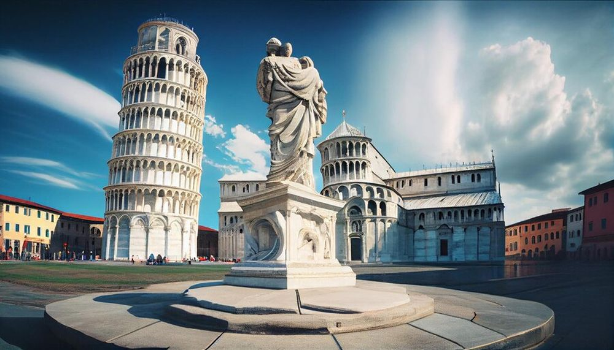

Descoperă Pisa - O bijuterie toscană faimoasă pentru Turnul înclinat
Pisa este un oraș istoric în Italia, cunoscut în întreaga lume pentru Turnul înclinat și multe altele:
-

Turnul înclinat - Iconic și misterios
Cel mai faimos obiectiv turistic al Pisei, cunoscut pentru înclinarea sa distinctivă și istorie intrigantă.
-

Catedrala din Pisa - Capodoperă romanică
O catedrală superbă cu influențe arhitecturale romane, gazdă pentru opere de artă și moaște sfinte.
-

Baptisteriul - Eleganță baptistă
O clădire impresionantă în stil romanic, celebră pentru acustica sa uluitoare.
-

Piazza dei Miracoli - Piața miracolelor
O piață splendidă, înconjurată de monumente istorice impresionante și verdeata luxuriantă.
-

Râul Arno - Priveliști de apă
Oportunități minunate de a admira râul care străbate orașul și peisajele sale pitorești.
Concluzii
Pisa este mult mai mult decât Turnul său celebru - este un oraș cu bogată moștenire culturală și frumusețe toscană.